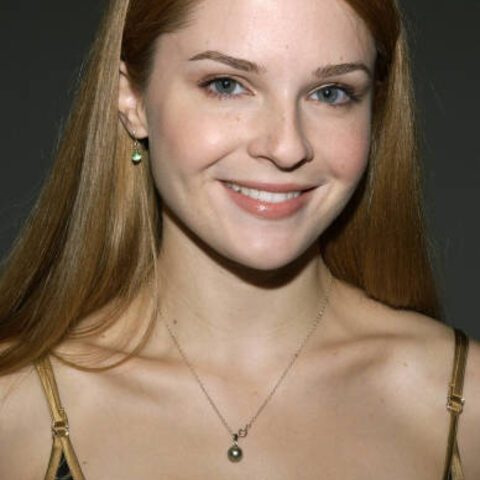

MOM
A woman returns home to search for her missing sister with developmental disabilities and mental illness, forcing her to confront the childhood trauma and family system she spent years trying to escape.
Synopsis
Elizabeth Rocha, a 31-year-old actress in Los Angeles, has built her life around control, ambition, and distance from the family chaos she escaped. When her sister Mary — developmentally disabled and newly psychotic — runs away in a winter storm, Elizabeth is forced to return home and lead the search herself. As she moves through group homes, shelters, old relationships, and the wreckage of her childhood home, the search for Mary becomes a reckoning with the mother who failed them both — and with the promise Elizabeth once made that she would never leave Mary behind.
The Filmmakers

Shannon Lucio is the writer and director of MOM. She is known as an actress for her work on True Blood.
Charlie Hofheimer produces MOM. He is known as an actor for his work on Mad Men.
Shannon Lucio photo: sean.koo, CC BY-SA 2.0, via Wikimedia Commons.